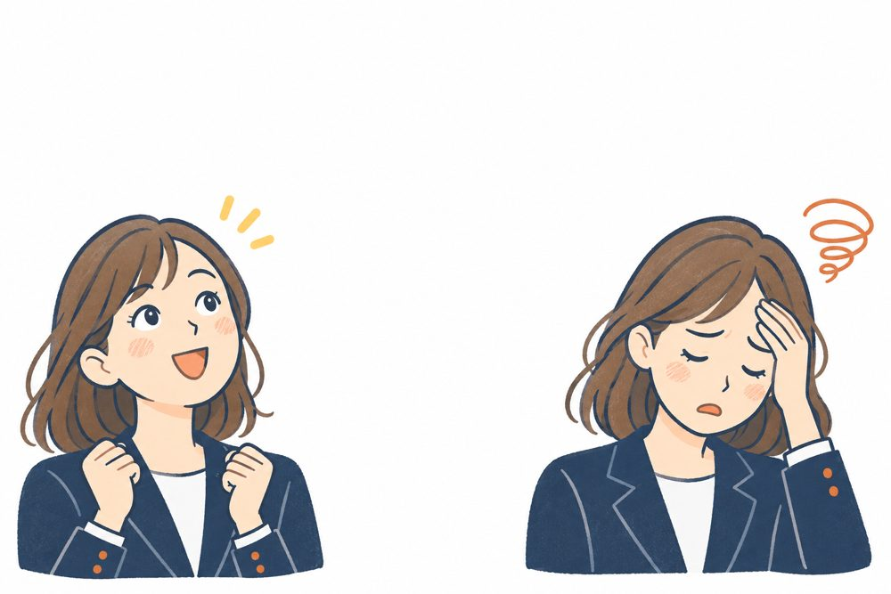

フリーターから事務職を目指す
土日休みの正社員へ
アルバイトから営業事務へ
正社員の経験がなく、何から始めればいいかわからない状態でした。求人票の見方と、辞めた理由の伝え方を整理して、土日休みの事務職に絞って応募を進めます。
※相談の進め方のイメージです。結果をお約束するものではありません。
キャリアハック
LINEで無料相談
20代・未経験・第二新卒の方へ
求人選びから面接練習まで、
LINEで無料でサポート
あなたと同じ悩みを、
ひとつずつほどいていきます
の「働き方を変える」一歩を、一緒に
アルバイトから営業事務へ
正社員の経験がなく、何から始めればいいかわからない状態でした。求人票の見方と、辞めた理由の伝え方を整理して、土日休みの事務職に絞って応募を進めます。
※相談の進め方のイメージです。結果をお約束するものではありません。
販売・接客からカスタマーサポートへ
友だちと休みが合わず、仕事帰りに考える時間もありませんでした。LINEなら通勤中や夜でも相談できるので、少しずつ希望を言葉にしていきます。
※相談の進め方のイメージです。結果をお約束するものではありません。
第二新卒として転職活動へ
1年足らずで辞めたことが引っかかっていました。辞めた理由の言い方を一緒に練習して、面接前に何度でも言い直せる状態にします。
※相談の進め方のイメージです。結果をお約束するものではありません。
仕事でお困りのあなたへ
こんなお悩みありませんか？
しかも、このまま
我慢して働き続けても、、、

数年後…いまの職場動いた場合なんてことに、、！
でも、どうすれば…
そんな方は
転職に詳しいプロが
!ただし、注意点が一つ！
転職エージェントは
“自分に合った”
エージェントを選べなければ、
転職成功に
遠ざかってしまいます

そこで
キャリアハック
キャリアハックとは
未経験・第二新卒の方の
転職相談を、LINEで受けて
0から内定まで
“すべて”を
サポートします！
あなたの希望を
第一に考え、
最適な転職サポーター
をご紹介

自己分析から
応募の準備までを
“すべて”寄り添える
転職サポーター
基準をしっかり確かめた
転職サポーターをご紹介
あなた専用の担当者が
最後まで寄り添って相談
ネットに出ていない
非公開求人もご紹介
担当者があなたの代わりに
条件の相談もサポート
だから
相談料は0円
＆
求人紹介まで
ひとりで抱えず
LINEで進められます
¥0転職まで 完全無料
¥0友だち追加だけで登録今すぐ無料で相談するはじめの一歩はLINEのひとことから
まだ決めていなくても
相談だけでもOK！


※求人は時期や地域によって変わります。紹介できる内容は相談時にお伝えします。
# 相談 01
正社員の経験がなくて
応募していいのか不安
アルバイトだけでも相談して大丈夫です。まずは今までの仕事で「何をしてきたか」を、LINEで話しながら整理します。未経験から応募できる求人を中心に、職務経歴書づくりから一緒に進めます。ひとりで悩むより、早く動きやすくなります。
# 相談 02
辞めた理由をどう話せば
いいかわからない
短期間で辞めた理由は、隠すのではなく言い方を整えるところから始めます。事実はそのままに、前向きに伝わる言葉へ。面接の前に、LINEで何度でも言い直して練習できます。
# 相談 03
まだ転職するか
決めていない
迷っている段階でも大丈夫です。今の仕事を続けるか、動くか。気になっていることをそのまま送ってください。話してみて、今は動かないと決めてもかまいません。催促はしません。
※よくあるご相談を例にした内容で、実際の個人の声ではありません。
でも、こんな自分でも
本当に転職できますか？
前職は短期間で
辞めてしまったから
厳しいかも
経験ナシ・学歴ナシの
私でも大丈夫？
自分に合った
仕事がわからない…
同じ悩みを抱える方の相談に、
あなたに合った転職サポーターが
0から全てサポートするので、
理想の働き方をめざせます！
たった1つだけお願い…
ご相談をはじめたあとで、
連絡なしにやめてしまうと、
こちらも進められません。
やめるときは、前日までに一言
LINEで送ってください

STEP2
LINEを友だち追加
STEP3
トーク画面から
今の状況をひとこと送る
¥0転職まで 完全無料
¥0友だち追加だけで登録今すぐ無料で相談するQ.電話がかかってきたりしませんか？
A.担当者から電話をかけることはありません。電話で話したいときだけ、つながりやすい時間帯を送ってください。
Q.迷っているだけの段階でも、LINEしていいですか？
A.大丈夫です。迷っている段階の相談を前提にしています。求人を見ずに終わっても、催促はしません。
Q.バイトの経験しかなくても、相談できますか？
A.できます。未経験から応募できる求人を中心に一緒に探します。職務経歴書がまだ無くても、一から作るところから始められます。
Q.なぜ無料なのですか？
A.採用が決まったときに、紹介した人材紹介会社が求人企業から手数料を受け取る仕組みだからです。人材紹介会社は、法律で原則として求職者から手数料を受け取れません（職業安定法 第32条の3 第2項）。あなたに費用はかかりません。